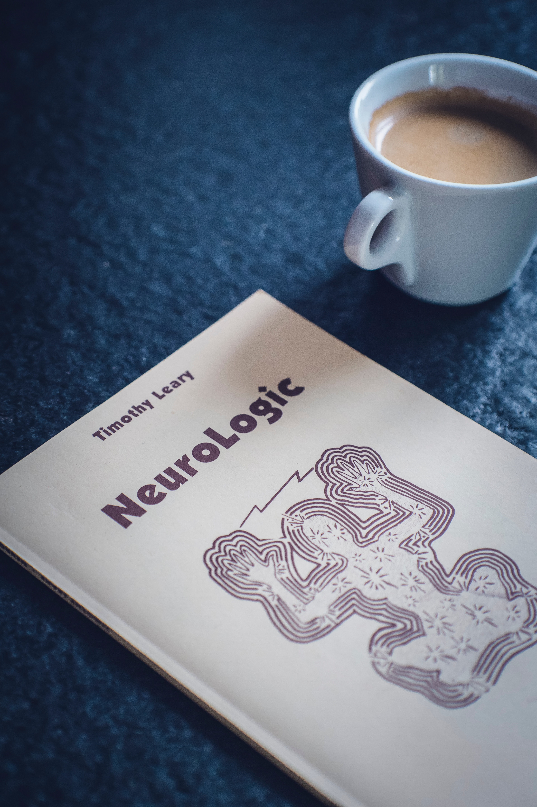

심리학(心理學, 영어: psychology)은 인간의 행동과 심리과정을 과학적으로 연구하는 경험과목으로서, 인문과학에서부터 자연과학, 공학, 예술에 이르기까지 많은 분야에 공헌을 하고 있다. 인간이 관계된 모든 분야에는 직접적으로나 간접적으로 인간의 행동과 사고에 관한 연구인 심리학의 학문적 뒷받침이 요구되기 때문이다.
특히 고도의 정보화 사회가 되어가면서 인간의 삶의 질과 관계된 문제들이 점점 더 그 중요성을 더하고 있고 이러한 문제에는 감각, 지각, 사고, 성격, 지능, 적성 등의 인간 특징들이 고려되어야 하기 때문에 인간의 행동과 기저 원리를 밝히는 심리학은 미래 사회에서 그 중요성을 점점 더해갈 것이다.
심리학은 연구 분야에 따라 크게 심리학의 기초 원리와 이론을 다루는 '기초심리학'과 이러한 원리와 이론의 실제 문제를 해결하기 위한 '응용심리학'으로 나뉘며, 2014년 현재, 한국의 경우에는 14개 분과[1], 미국의 경우 본과 제외 56개 분과[2]가 있다.
